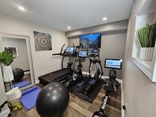
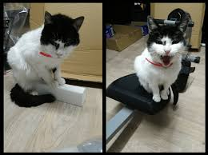
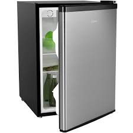

In a stunning twist of domestic irony, Dave Henderson, 34, has come to the realization that his home gym, equipped with a treadmill, weights, and a rowing machine, is primarily serving as a very expensive clothes rack. Henderson's wife, Lisa, pointed out that the treadmill now has a new function: holding yesterday's laundry. "I thought I was going to become a fitness guru," said Henderson, "but it turns out I'm a fashion designer for sweatpants."
Sources confirm that Henderson has an undiscovered talent for transforming workout equipment into furniture. His rowing machine is now a convenient place for his cats to nap, and his weights are strategically placed to keep the living room door propped open. "I never knew I was so innovative," he remarked. "I guess I'm just ahead of my time in the world of home decor."
When asked about his exercise routine, Henderson confessed he prefers “dynamic couch surfing” and “strategic remote control lifts.” "It's all about flexibility," he explained. "I stretch the truth about working out and lift my spirits with a good TV show marathon." Despite his unconventional methods, Henderson assures everyone that he's “really committed to the cause.”

Fitness expert Dr. Barbara Cardio weighed in on Henderson's situation, stating, “While Dave's approach is unorthodox, it highlights a common issue: the lack of motivation. Turning exercise equipment into functional household items is a coping mechanism, albeit not a very effective one for physical fitness.” She advised that while creative, perhaps a more traditional approach might yield better results—such as using the treadmill as an actual treadmill.
Looking ahead, Henderson has grand plans to turn his home gym into a “luxury relaxation zone.” He's considering installing a mini-fridge stocked with snacks next to his rowing machine and converting his weights into stylish door stops. “Why sweat when you can sit back and enjoy the view of your own ingenuity?” he mused. For now, Henderson's home gym remains an elite hub of sedentary innovation.
